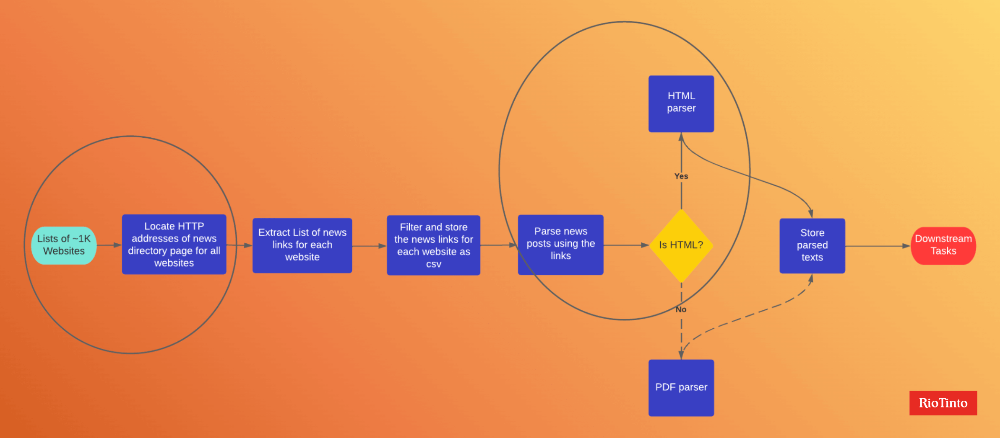
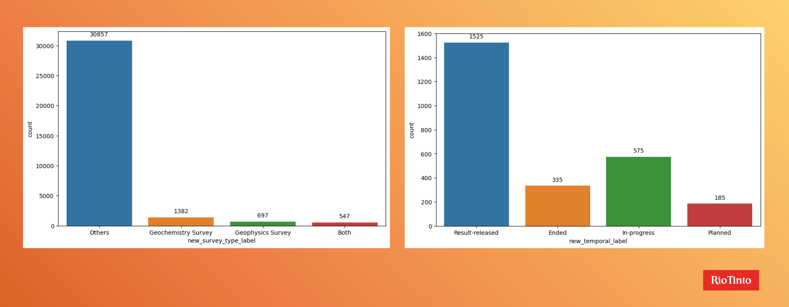
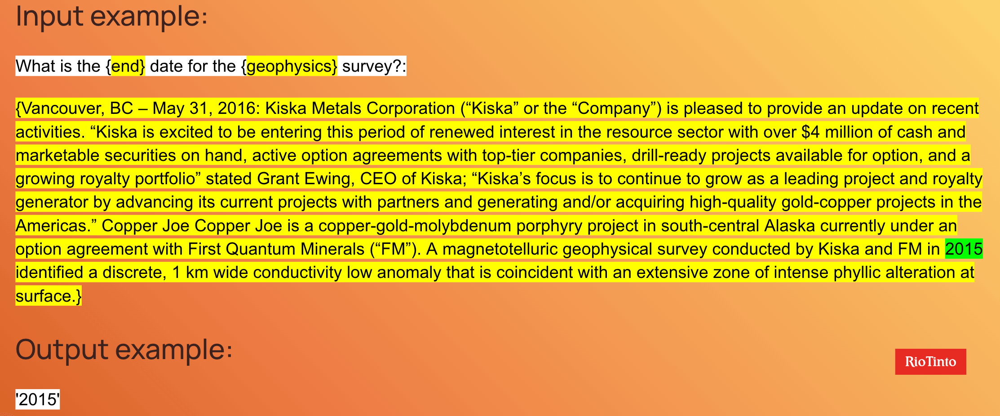
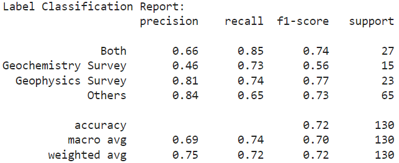
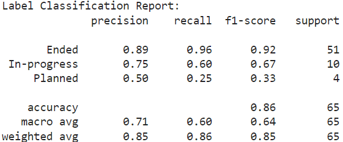
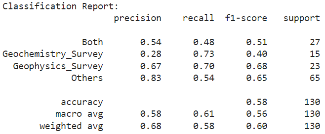
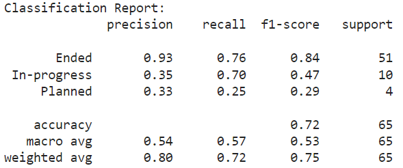
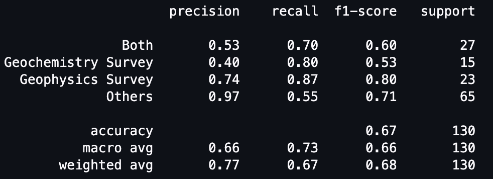

Uses AI to analyze online press releases, to track mining-related surveys and their completion timelines, to help Rio Tinto better invest.
Rio Tinto Mining Survey Scrapper Project — UBC Master of Data Science Team
Hey there! Welcome to our behind-the-scenes look at the creation of a unique AI project that’s helping Rio Tinto keep their finger on the pulse of the mining industry.
Imagine this — a system that can wade through the vast ocean of the internet, combing through countless press releases from thousands of resource companies, and finding out the completion status of mining-related geophysics and geochemistry surveys. Sounds like science fiction? Well, it’s the technology for the future that we are developing today. Its aim? To collect all the critical intelligence about planned, in-progress, or recently completed mining-related surveys to help Rio Tinto make savvy investment decisions. Cool, right?
The heart of the project is its well-defined focus, a product of numerous chats, debates, and brainstorming sessions with our partners. When we kicked off, we had around 20 overlapping mining-related events to pick from — everything from operational details to financial decisions and personnel changes. With so many possibilities, we did our homework and got familiar with the ins and outs of the mining industry, tracing the mineral exploration roadmap from initial prospecting and surveys all the way to discovery and continuous monitoring.
But the jackpot question was — what event should we prioritize for tracking from a business perspective? After a lot of discussions, we and our partners concluded that the most valuable information to follow would be mining-related geophysics or geochemistry surveys, their completion status, and the survey's begin and end dates.
Now, onto the big hurdle: the data we received. Rio Tinto had given us an impressive dataset of around 33,000 press releases, but there was a catch — none of the info about survey type, temporal status, or date was labeled. Yes, you heard it right, a goldmine of information but not a label in sight.
We took a swing at several unsupervised learning approaches, like topic modeling using Latent Dirichlet Allocation (LDA), and information retrieval using Facebook’s pretrained Contriver model for zero-shot classification. But the results? Well, let’s just say they left something to be desired.
After a solid chat with our academic advisor, Professor Zhu, we realized that a supervised approach could be a game-changer for our performance levels. But how can you supervise without labels? That’s where GPT, one of the most popular large language models, comes in.
We designed a workflow that passed the historical dataset through GPT to annotate the data. We started off with a basic prompt to annotate 5000 press releases and used stratified sampling to choose a 130-example test set. We then manually annotated each example and treated them as our ground-truth. By carefully tweaking our prompts and selecting the one with the best score on the test set, we were able to annotate the entire 33K PRs dataset.
Once we had our labels, it was time to train our models. We leaned heavily on transformer-based models, utilizing both encoders and decoders, since they’re the go-to for classification and information retrieval tasks. We tried a few models, including Distilbert, Bidirectional LSTM, FASText, and DistilRoBERTa. We also experimented with adding extra input features to the model, like the survey type from the first model to improve the performance of the completion status classification model.
And voila! The project came together like a well-oiled machine. Want to get a glimpse of the bigger picture? Check out the complete flow chart of our project below.
Data
Let us tell you more about the dataset we are working with.First off, we had to create a press release dataset. But we couldn’t just pull it off some random database, we had to scrape it from the news pages of companies in the mining and natural resources industry. Sounds simple, right? Not exactly.
We started with a list of 1090 companies and their respective news directory URLs in a humble csv file. But here’s the kicker, the actual news articles (or press releases) were scattered around the news directory, waiting to be parsed. For example, below is the news directory of Rio Tinto. So we wrote a script that would first fish out the news links on each company’s news directory page, and then wade through each link, one by one.
By going through this process, we had a shiny new csv file holding 9872 freshly scraped press releases from 638 companies. On top of the textual content we extracted the metadata for the press releases too. So we have the PR titles and published dates, for when they exist, all neatly arranged in our dataset.
Some of these press releases were in HTML format, and some in PDF. So, we had to use different scrapers depending on the format. Take a look at our workflow diagram here that shows what this pipeline looks like:
Most of the newly scrapped press releases are published between 2020 to 2024, which are quite recent. The average length of each press release is around 900 words. You can see the distribution of the publish dates and the news’ lengths in the dataset:
Annotating the historical dataset with prompt engineering
After we scraped our initial press release dataset, we turned our attention to annotating the historical dataset provided by our friends at Rio Tinto.
This historical dataset was a massive collection of roughly 33,000 press releases. Well, to be exact, the merged first two paragraphs of each, because based on our observations, they contain the most important information for each press release. But here’s where it gets interesting — we then used the GPT-3.5 Turbo model from OpenAI to annotate each press release with survey type information. “Geochemistry Survey,” “Geophysics Survey,” “Both,” and “Others” were the categories we’re talking about. “Both” category is for when a press release mentioned both geochemistry and geophysics surveys, and “Others” is for the ones that didn’t mention either.
We didn’t stop there, because GPT was also tasked with determining the completion status of any mentioned survey. The labels were “Planned,” “In-progress,” “Ended,” or “Result-released”.
And if the press releases mentioned any dates, GPT would extract the specific start and end dates of the surveys. Check out these distribution charts to see how the survey type and the completion status annotations are spread across our dataset:
As an extra step, with the help of the partners from Rio Tinto, we manually annotated 130 examples pulled from the historical dataset. Think of these manual annotations as our gold label, a benchmark to test the accuracy of our GPT labels and model outputs. Since the majority of the PRs fall under the survey type “Others,” a simple random sampling from the historical dataset would not provide us with balanced data to test the results accurately. To address this, we have prompted the GPT again on 5000 samples to obtain their survey type and temporal labels. From these results, we have performed stratified sampling to select 10 examples for each class combination, resulting in a total of 130 samples.
Below is the best prompt we used for annotating the survey type. You can check our final report for other prompts we are using for each of the classifications and the date extraction tasks.
Our GPT labels for survey type hit an impressive accuracy score of 0.81 on our test set of 130 examples. When classifying the completion status and extracting dates for those examples identified as a survey by the first model, things got a bit trickier. Some examples were wrongly predicted as “Others” and lacked a completion status or dates. If we include these misclassified examples, our accuracy for the completion status model is 0.77. Exclude them, and our accuracy increases up to 0.92! As for the start and end dates, we correctly labeled these for 73% of all geophysics surveys and 67% of geochemistry surveys.
Methods
Zero-shot attempts and approaches
We tried the following zero-shot methods:
- ZeroShot Two Step Classification(based on Facebook Contriever)
- ZeroShot one step Classification(based on Facebook Contriever)
- ZeroShot one step Classification(based on Sentence Transformers)
- BERTopic modeling
ZeroShot Two Step Classification (Facebook Contriever): The ZeroShot Two Step Classification approach based on Facebook Contriever did not meet our expectations due to challenges in determining thresholds and linear relevance scoring. These limitations affected the accuracy and performance of the model.
ZeroShot One Step Classification (Facebook Contriever): The ZeroShot One Step Classification approach based on Facebook Contriever did not yield satisfactory results. The model’s performance fell short of expectations, indicating the need for further improvements and alternative approaches.
ZeroShot One Step Classification (Sentence Transformers): The ZeroShot One Step Classification approach based on Sentence Transformers showed potential but did not meet our desired level of performance. Although sentence similarity was utilized for classification, the results did not meet expectations, suggesting the need for enhancements and refinements in the model.
BERTopic Modeling: BERTopic, a topic modeling technique based on the BERT language model, showed promising results in generating meaningful and interpretable topics from text data. However, during hyperparameter tuning, it was observed that reducing the number of topics adversely affected the model’s performance. Further exploration and optimization are required to improve the performance of BERTopic.
Methods for Training the Classification Model using Supervised Learning
We tried the following supervised learning methods:
- Distilbert base
- Bidirectional LSTM with DistilBERT Base
- FASText
- DistilRoBERTa
To develop effective classification models, we trained different models like DistilBERT, FastText, and DistilRoBERTa. We followed a systematic process for training these models, including data preprocessing, tokenization, model initialization, and iterative training to improve performance. Below is the flowchart of the process:
After training the models, we evaluated their performance using the testing dataset. We calculated metrics such as accuracy, precision, recall, and F1-score to measure how well the models classified the data. We also generated classification reports and confusion matrices to get a better understanding of their overall performance.
Question-Answering Date Extractive model
For the extraction of dates, we decided to use question answering models. After experimenting with a wide range of models, we decided to go with the Flan-T5 model.
To train the Flan-T5 model for date extraction, we uses three inputs which are the survey type, the data type that we want to extract, and the input text containing the actual date. Below is an example showing how we combine those three inputs into a single text using a template.
Following this system, we extracted the start and end date of the specified survey type. In cases where the survey type was ‘Other’, we skipped it. In cases where the survey type was ‘Both’, we predicted the start and end times for both Geophysical and Geochemical survey.
Since the model makes predictions in all cases, including the ones where a date is not present, we need to filter out the predictions where there is no date. For this, we first tried using scores to filter out irrelevant predictions. This was not as effective as expected, hence, we used a date parser to detect the presence of a date and standardize it. We also tried to filter out all the entries which were not able to be standardized. By doing this, we did lose some valid predictions, which led to a lower accuracy.
We finally used a combination of scoring and standardization to filter the results. This resulted in a much better output which consists only of dates. Below are one example of end date extraction:
Evaluation & Analysis of the Models
DistilBert
For the evaluation of classification models, specifically the DistilBERT model using a two-step classification approach, we utilized a dataset comprising 33,000 data points generated for the training model.
To address the class imbalance issue, downsampling was applied to ensure a more balanced distribution of the labels. By reducing the instances of the majority classes, we aimed to improve the model’s ability to learn and generalize across all classes.
We trained the above model on distill bert on num_epochs = 20, batch_size = 32, and used a test set of 130 human labeled dates for evaluation of dates. Below are results produced from 130 sample dataset:
Survey type labels predictions on 130 examples human test set: Accuracy: 71.54%
Survey temporal status labels predictions: Accuracy: 86.15%
After removing the “not labeled” data, the total number of data points decreased to 65. Consequently, the accuracy improved significantly. However, the f1-score for the “planned” category decreased to 0.33.
FASText
We also used a text classification approach using the FastText algorithm. FastText, developed by Facebook’s AI Research (FAIR), is a powerful library that offers efficient solutions for text classification and representation learning. By representing words as character n-grams, FastText captures valuable word-level and subword-level information. Our goal was to leverage FastText for classification on labeled text data.
The performance achieved for the survey type classification on 130 test set is as follows:
The performance achieved for the temporal status classification is as follows:
DistilRoBERTa
We also tried the DistilRoBERTa model for two step classification tasks. For survey type classification, we directly fed the first two paragraphs of press release as input to train the model, while for temporal classification, we fed the first two paragraphs of press release and the survey type as two inputs for the model to classify into Ended, In-progress and Planned. The classification report for the results is shown below:
The performance achieved for the survey type classification is as follows:
The performance achieved for the temporal status classification is as follows:
In our exploration of classification approaches, we noted BERT-based methods such as BERTopic and DistilBERT to be remarkably effective, especially for 'label' classification tasks. FastText too performed well, thanks to its use of word embeddings.
However, not all results hit the mark. The zero-shot Contriever and DistilBERT enhanced with bidirectional LSTM and pooling, failed to deliver expected improvements. This underperformance signals potential difficulties in defining thresholds and issues with linear relevance scoring.
A key insight from our analysis was DistilBERT's contrasting performance - exceptional accuracy for 'label' classification, but a downturn for 'temporal_label' classification. This discrepancy underscores the need to refine our training data and labeling process.
Our system, notably, leans towards generating more false positives than false negatives - a concern as it may cause misclassifications and inaccuracies, impacting the system's overall reliability.
While we haven't analyzed results from time-stamped data or long-term trends, it’s noteworthy that despite our survey-type classification falling short of DistilBERT, it outperforms the latter in temporal status. This improvement could be due to the additional contextual information provided to the model, like the type of survey.
Question-Answering Date Extractive model (Flan-T5)
We recently evaluated our dates extraction model using a test set of 130 human-labeled data points, and the date extractive model achieve an overall accuracy of 50.54%.
Although our date extraction model fell short of GPT's performance — with GPT achieving 73% accuracy for the geophysics survey and 67% for the geochemistry survey — it's crucial to dive deeper into the figures to gain a comprehensive understanding.
The finer points behind the results are:
- Standardization: When the model encounters incomplete date information, it defaults to the current date for the missing data. For example, an input of '2013' is predicted as '2013-06-14', assuming the current date is June 14. This standardization leads to an apparent mismatch in accuracy calculations, although, in essence, the year is correctly predicted.
- Formats: The model stumbles when it comes to unconventional date formats like 'Mid-July', which it can't readily standardize to a specific date. In these cases, the output is marked as N/A, leading to an apparent mismatch despite the actual dates overlapping.
- Concluded Surveys: When a survey concludes, it may not always make sense to have separate start and end dates. For instance, if a survey ends on December 6, the model predicts the start date as December 6 while marking the end date as N/A. While this result gives us the necessary information, it technically counts as a mismatch due to the data being in different columns.
These nuances highlight the need for an in-depth understanding of accuracy calculations beyond the raw percentage figures. Despite the lower accuracy, our model still provides valuable date information — you just need to know where to look!
Future work
There are also some additional work we can do in the future to further improve our project:
Expanding test set to make the distribution of each class more balanced
We used a manually labeled 130 examples test set to verify the accuracies of the classification and date labels produced by GPT, and choose the prompts that produced the highest accuracies as the prompt we used to generate the training labels. However, the manual labeling procedure is only performed after we select 10 samples from each class combination from a historical dataset, based on the results of an initial labeling using a baseline GPT prompt. Since the baseline prompts are written before the start of prompt engineering, they not produce the results as accurately as our best prompts. As a result, some stratified samples do not actually belong to the class combinations that they were initially labeled, resulting in an unbalanced 130 examples test set, especially for the completion status labels — the majority of the labels in the 130 test set actually belongs to “Ended or Result-released”, and there are fewer examples in the “Planned” and “In-progress”. Therefore, in the future the 130 test set can be expanded to have balanced representations of examples in each class.
Further improve the performance of the date extraction models
While we achieve a relatively high accuracy on both of the classification models, we could work on improving the accuracy of our dates extraction model. We should accommodate more date formats so the system doesn’t ignore a lot of valid predictions.
Another suggestion to improve our accuracy is to also take into account the temporal classification when training the models to make inference. For example, when the temporal status for a particular survey is “Planned” or “Ended or Result Released”, then it wouldn’t make sense to predict the separate start or end date for the survey, since a survey could be planned or ended only in a single moment in time. Therefore, in the future we could consider training separate date extraction models for different types of the press releases.
Conclusion
And there you have it! From scraping mining-related press releases to training machine learning models and to dealing with challenges of label-less data — it’s been quite a journey! As we dig deeper into this project, we’re continually refining our models, learning more about the nuances of the mining industry, and improving our strategies for data balance and accuracy.
We’re extremely grateful to have had this opportunity to work with Rio Tinto and create something meaningful and valuable for the mining industry. It’s been an enlightening journey and we’re eager to continue this work, pushing the boundaries of what machine learning can achieve.
Thank you for following along with us on this adventure. Remember, the exciting world of data science is a journey, not a destination, and there are always new frontiers to explore. We can’t wait to share more of our findings and experiences with you. Stay tuned and until then, keep discovering!